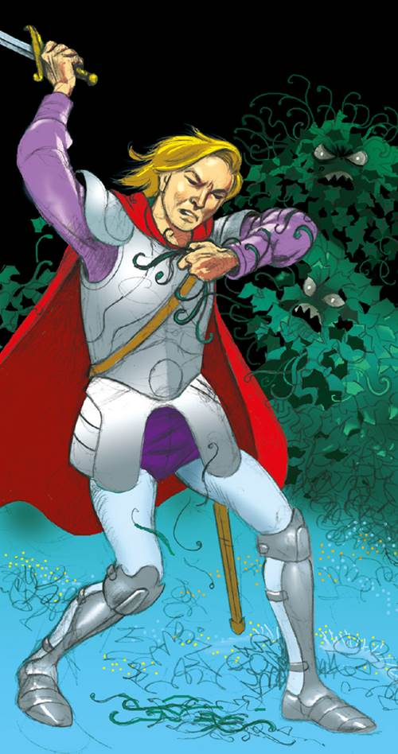
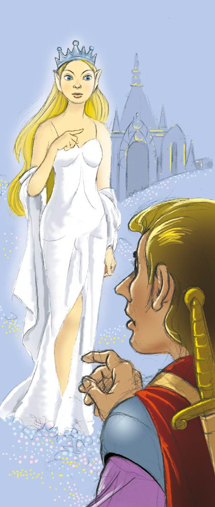
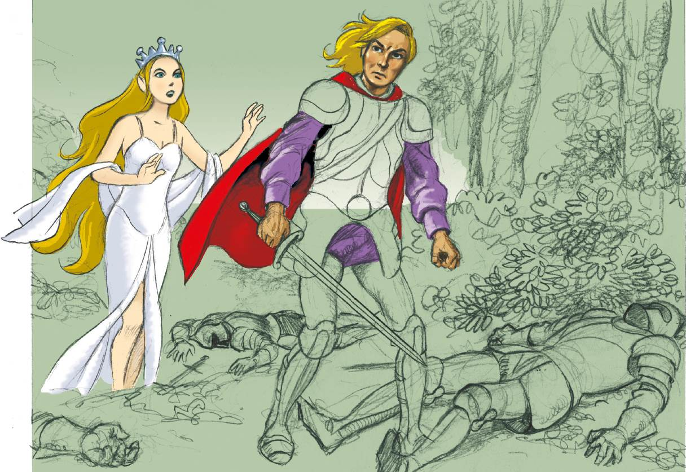

Reflexiono para avanzar
Alumno:
Reflexiono para avanzar
Alumno:
1. Argumenta. ¿Crees que la fantasía desarrolla nuestra imaginación?
2. Lee el capítulo III de la obra La hija del rey del país de los elfos, escrita en 1924 por Lord Dunsany.
Capítulo III
La espada mágica se topa con algunas espadas del país de los elfos

Cuando Alveric llegó al bosque encantado, la luz con la que el país de los elfos resplandecía no había aumentado ni menguado, y vio que no provenía de radiación alguna, a no ser que las luces errantes de momentos maravillosos que asombran a veces a nuestros campos y desaparecen en el instante mismo en que aparecen crucen extraviadas la linde del país de los elfos. Ni el sol ni la luna daban luz a ese día encantado.
Una hilera de pinos por los que la hiedra trepaba hasta el crecimiento de su negro follaje se erguían como centinelas en el borde del bosque. Las agujas de plata brillaban como si fueran las que constituían el azul resplandor en que se bañaba el país de los elfos.
Alveric, que había penetrado profundamente en el país de los elfos y se encontraba ahora frente a su palacio capital, sabiendo lo bien guardados que estaban sus misterios, desenvainó la espada de su padre antes de entrar en el bosque. La otra colgaba todavía a sus espaldas dentro de su vaina sobre el hombro izquierdo. Cuando pasó junto a uno de los pinos guardianes, la hiedra que vivía en él se soltó de sus vitículas y, dejándose caer rápidamente, avanzó sobre Alveric y lo asió por el cuello.
La larga espada desgastada de su padre llegó justo a tiempo; si no la hubiera desenvainado, difícilmente habría podido escapar, tan veloz fue el ataque de la hiedra. Cortó vitícula tras vitícula, que lo aferraban como la hiedra se aferra a viejas torres, y aún más lo atacaban, hasta que seccionó el tallo principal entre él y el árbol. Mientras lo hacía, oyó tras de sí un avance sibilante, otra se había desprendido de un árbol y se precipitaba sobre él con todas sus hojas extendidas.
La verde criatura lucía salvaje y encolerizada al aferrarle el hombro izquierdo como si fuera a tenerlo sujeto para siempre. Pero Alveric le cortó las vitículas con un movimiento de la espada y luchó luego con el resto mientras la primera tenía vida todavía, pero era ahora demasiado corta para alcanzarlo, y azotaba furiosa con sus ramas el suelo. Superada la sorpresa del ataque y librado de las vitículas, Alveric retrocedió hasta que la hiedra no pudo alcanzarlo, y él podía atacarla todavía con su larga espada.
La hiedra se arrastró hacia atrás para atraer a Alveric, y se abalanzó sobre él cuando la siguió. Pero, aunque terrible es el abrazo de la hiedra, esa era una espada de aguzado filo; y tanto había sido cercenada por su atacante que huyó hacia su árbol y trepó nuevamente en él.
Él dio un paso atrás y observó el bosque a la luz de esta nueva experiencia para escoger un camino sin riesgo a través de él. Vio enseguida que, en la barrera de pinos, los dos que enfrentaba tenían ahora la hiedra tan reducida como consecuencia de la lucha y que podría pasar entre ellos sin peligro de ser alcanzado.
Avanzó entonces, pero en el momento de hacerlo, vio que los pinos se acercaban el uno al otro. Supo que había llegado el momento de recurrir a su espada mágica. De modo que devolvió la espada de su padre a su vaina sobre su flanco y desenvainó la otra por sobre el hombro, y avanzando hacia el árbol que se había movido, atacó a la hiedra cuando saltó esta sobre él. Cayó la hiedra de inmediato al suelo, no sin vida, sino como una hiedra corriente. Y asestó luego un golpe al tronco del árbol y una astilla saltó no más grande que la que hubiera hecho saltar una espada corriente, pero el árbol entero se estremeció. Con ese estremecimiento, desapareció enseguida un cierto aspecto ominoso que el pino había exhibido, y quedó allí erguido como un árbol ordinario sin hechizo alguno. Prosiguió luego por el bosque con su espada desenvainada.
No había andado mucho cuando oyó tras de sí un sonido como el que hace una ligera brisa en la copa de los árboles y, sin embargo, no soplaba viento alguno en aquel bosque. Miró por tanto a su alrededor y vio que los pinos lo seguían. Venían lentamente tras él manteniéndose fuera del alcance de su espada, pero a izquierda y derecha le iban ganando terreno, de modo que iba siendo encerrado gradualmente en una media luna que iba haciéndose más y más espesa a medida que llegaba los árboles que se le cruzaban en el camino y que no tardaría en aplastarlo. Alveric vio de inmediato que retroceder sería fatal y decidió seguir adelante confiando sobre todo en la velocidad; porque su rápida percepción había ya advertido algo lento en la magia que regía el bosque; como si quien lo controlara fuera viejo o estuviera cansado de la magia u otras cosas lo interrumpieran. Así que avanzó asestando un golpe con su espada a todo árbol con que se topaba, estuviera encantado o no; y las runas que impregnaban el metal, del otro lado del Sol, eran más poderosas que los hechizos del bosque. Grandes robles de tronco siniestro caían y perdían todo su encantamiento cuando Alveric pasaba a su lado y los hería con su espada mágica. Avanzaba más deprisa que los torpes pinos.
Y pronto dejó en ese extraño y espantable bosque una estela de árboles sin el menor hechizo que quedaban erguidos sin rastros de encanto ni de misterio siquiera.
Salió de la lobreguez del bosque a la gloria esmeralda de los prados del país de los elfos. También de esto hay sugerencias en nuestro mundo. Imaginad los prados cuando emergen de la noche con las luces tempranas resplandecientes en las gotas de rocío una vez desaparecidas las estrellas; rodeados de flores que empiezan a crecer, recobrados sus gentiles colores al cabo de la noche; hollados solo por los más pequeños y silvestres; protegidos del viento y el mundo por árboles en cuyas frondas es todavía de noche. Imaginaos a estos a la espera del canto de los pájaros; hay allí a veces casi una sugerencia del fulgor de los prados del país de los elfos; claro que cesa tan de prisa que nunca puede uno estar seguro. Más hermosos que nada que nuestra fantasía conciba, más de lo que nuestros corazones esperan, eran el rocío y el crepúsculo en que refulgen y brillan estos prados. Y otra cosa tenemos que nos los recuerdan: las algas o los musgos marinos que engalanan las rocas mediterráneas y brillan desde las aguas azul verdosas para quienes las contemplan desde el vértigo de los acantilados. Más semejantes al suelo marino eran estos prados que ninguno de nuestros paisajes, porque el aire del país de los elfos así es de profundo y azul.
Contemplaba Alveric la belleza de esos prados que resplandecían a través del crepúsculo y el rocío, rodeados de la gloria malva y rojiza de las flores. Comparados con ella, nuestros atardeceres palidecen y nuestras orquídeas se desmoronan. Y más allá de ellos, se extendía, como la noche, el bosque mágico. Y asomando por sobre el bosque, con portales refulgentes abiertos todos ampliamente a los prados, con ventanas más azules que nuestro cielo en las noches de verano, como construido con la luz de las estrellas, brillaba ese palacio del que solo puede hablarse en un canto.

Mientras Alveric estaba allí con la espada en la mano al borde del bosque contemplando por sobre los prados de más alta gloria, por uno de los portales salió sola la hija del rey de los elfos. Avanzó encandilada hacia los prados sin ver a Alveric. Sus pies rozaban el rocío y el aire denso y gentilmente presionaban por un instante la hierba esmeralda, que se inclinaba y se alzaba, como nuestras campánulas cuando las mariposas azules se posan en ellas y las abandonan, errando despreocupada junto a las colinas decreta.
Y al pasar ella, él no respiró ni se movió; no podría haberse movido siquiera si los pinos aún lo hubieran perseguido, pero permanecían en el bosque sin atreverse a tocar estos prados.
Llevaba ella una corona que parecía tallada en grandes zafiros pálidos. Resplandecía la hija del rey del país de los elfos en esos prados y jardines como un amanecer que de la noche hubiera salido sin advertirlo a algún planeta menos alejado del Sol que el nuestro.
Y, al pasar cerca de Alveric, volvió de pronto la cabeza. Sus ojos se abrieron con asombro; jamás había visto antes a un hombre de los campos que conocemos.
Alveric la miró a los ojos todavía sin habla e imposibilitado: era, por cierto, la princesa Lirazel. Y vio entonces que su corona no era de zafiro, sino de hielo.
—¿Quién eres? —preguntó ella. Y de todas las cosas terrenales, su voz se parecía al hielo quebrado en mil fragmentos mecidos por el viento de primavera sobre los lagos de algún país del Norte.
Y él respondió:
—Vengo de los campos cartografiados y conocidos.
Entonces, ella suspiró momentáneamente por esos campos, porque tenía noticia de cómo allí transcurre hermosamente la vida y cómo hay siempre nuevas generaciones. Pensó en las estaciones cambiantes, en los niños y en la ancianidad, aquello que los trovadores feéricos cantaban cuando hablaban de la Tierra.
Y cuando él la vio suspirar por los campos que conocemos, le contó algo de la tierra de la que había venido. Ella siguió haciéndole preguntas y él le contó entonces cuentos de su patria y del valle de Erl. Lirazel se maravilló al oírlo y le hizo muchas más preguntas todavía. Él le contó todo lo que sabía de la Tierra, no lo que él había visto con sus ojos en sus escasos veinte años, sino los cuentos y las fábulas de los usos de las bestias y de los hombres recogidos por el pueblo de Erl con el correr de los siglos y contadas junto al fuego cuando los niños preguntaban qué había ocurrido hacía mucho.
Así pues, al borde de esos prados cuya gloria milagrosa estaba rodeada de flores nunca vistas de nosotros, con el bosque mágico por detrás y el palacio resplandeciente en las cercanías, conversaban de la sencilla sabiduría, de los viejos y de las viejas, de las cosechas y del florecimiento de las rosas y las primaveras; de cuándo plantar en los huertos, de los animales salvajes conocidos, de cómo curar, de cómo sembrar, de cómo techar y de cómo soplan los vientos en las diversas estaciones sobre los campos que conocemos.
Y entonces aparecieron los caballeros que guardan el palacio por si alguien lograra atravesar el bosque. Cuatro llegaron resplandecientes sobre los prados en armaduras, con caras invisibles. En todos los siglos de encantamiento de sus vidas, jamás se habían atrevido a soñar con la princesa: nunca se habían descubierto la cara al arrodillarse armados ante ella. Pero habían hecho un juramento de terribles palabras: nunca hombre alguno podría hablar con ella si lograba atravesar el bosque encantado. Con ese juramento ahora en los labios, avanzaron sobre Alveric.
Lirazel los miró apenada, pero no le era posible detenerlos, pues venían por orden de su padre, que no podían evitar. Bien sabía ella que su padre no revocaría su orden, pues la había dado hacía siglos por mandato del hado. Alveric miró sus armaduras, que parecían más brillantes que ninguno de nuestros contrafuertes; luego avanzó hacia ellos desenvainando la espada de su padre, pues pensaba introducir su aguda punta por alguna articulación de la armadura. A la otra la llevaba en la mano izquierda.
Al atacar el primer caballero, Alveric le desvió el golpe, pero sintió un estremecimiento en el brazo, como si lo penetrara un rayo, y la espada voló de su mano. Supo entonces que ninguna espada terrestre podría salir al encuentro de las armas del país de los elfos, y cogió la espada mágica con la mano derecha. Con esta paró las estocadas de la guardia de la princesa Lirazel, porque eso eran los cuatro caballeros, y venían esperando esta ocasión desde el principio de los siglos. Ya no le sobrevino estremecimiento alguno de estas espadas, sino solo una vibración en el metal de la suya propia que la recorría como una canción y una especie de fulgor en ella que le llegaba a Alveric al corazón y se lo animaba.
Pero mientras Alveric seguía desviando las rápidas estocadas de la guardia, esa espada que era pariente del rayo se fatigó de esas defensas, porque había en su esencia velocidad y muchas jornadas desesperadas. Levantando la mano de Alveric junto con ella, asestó de golpes sobre los caballeros feéricos, y las armas del país de los elfos no pudieron resistir. Por las hendeduras de las armaduras empezó a manar una sangre espesa y extraña. Alveric, alentado por el celo de su espada, luchó animado y pronto derribó a otro, de modo que solo él permaneció en pie, además de uno de los guardias, que parecía dotado de una magia más poderosa que la concedida a sus camaradas caídos. Y así era, porque cuando el rey elfo había encantado a la guardia por primera vez, había encantado a este caballero feérico antes que otro alguno, mientras toda la maravilla de sus runas era reciente. El soldado, su armadura y su espada retenían algo aún de esa magia temprana, más potente que cualquier otra brujería concebida luego por la mente de su amo. Sin embargo, este caballero, como pronto pudo sentirlo a lo largo de su brazo y su espada, no tenía nada de esas tres runas fundamentales de las que la vieja bruja había hablado cuando forjó la espada en su colina; porque estas habían sido preservadas por el mismo rey del país de elfos, sin haberlas emitido nunca, para escudar su propia presencia. Para tener conciencia de su existencia, tuvo ella por fuerza que haber volado en su escoba hasta el país de los elfos y hablado allí secretamente a solas con el rey.

Y la espada, que había visitado la Tierra desde tan lejos, hería como la caída del rayo. Verdes chispas brotaban de la armadura; y escarlatas, cuando espada chocaba contra espada. Espesa sangre feérica manaba lenta de amplías hendeduras por la coraza. Lirazel contemplaba con espanto, maravilla y amor. Los combatientes se alejaron peleando y se internaron en el bosque. Las ramas caían sobre ellos, cercenadas por la lucha, y las runas contenidas en la espada de Alveric, venida de tan lejos, exultaban y bramaban ante el caballero feérico hasta que, en la oscuridad del bosque, entre las ramas cercenadas de los árboles ya sin hechizo, con una estocada como la de un rayo que hiende un roble, Alveric le dio muerte.
Ante el estrépito, y ante el silencio, Lirazel corrió a su lado.
—¡Rápido! —exclamó—. Pues mi padre tiene tres runas...
No se atrevió a hablar de ellas.
—¿A dónde? —preguntó Alveric.
Y ella dijo:
—A los campos que tú conoces.
Recuperado de https://goo.gl/oMBuHH